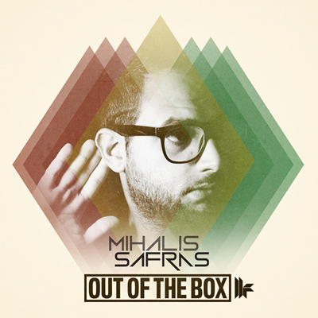

Mihalis Safras: Versatility is the key
{kind=link}
Hailing from the Greek capital of Athens, Mihalis Safras has had an extremely prolific profile as a DJ and producer over the past decade, building a reputation as one of the most consistent artists working in tech house, as well as for a versatility ability to span across the different shades of underground danced music.
This month Safras readies his third artist album Out of the Box for release on Toolroom Records, which he says hopes will showcase this versatility.
“Out of the Box Album is an album that for is me for is quite unique, not only because it includes the tracks I did over the past four years, but mostly because it is versatile in general,” Safras told I Voice.
As it is alluded to in the album’s title, Out of the Box is an album that is definitely engineered for maximum impact in the clubs. However, it also reflects Safras’ ability with his productions to span from the deeper sides of house music, right across to big room techno, and he says that when he sat down with the crew from Toolroom Records to handpick the tunes for the record from of his sizable collection of studio concoctions, this consideration was at the forefront.
“From techno to electronica, and from tech to deep house,” he says. “So maybe it’s not a ‘super fashion’ LP, but for sure it’s an album that you’ll be able to listen to next year as well”.
I Voice caught up with Safras to find out more about Out of the Box, about the strength of his relationship with the Toolroom Records crew, as well as his ongoing relationship with the Greece scene from which he arose out of to eventually become an international player.
Hi Mihalis, hope you’re well. How are things going for you so far this year?I’m quite well, I can say! Pretty excited for my third solo album on Toolroom Records, so I couldn’t have asked for more. So far music wise it has been a hectic year for me, with releases and remixes that I would consider a milestone in my discography so far, including the third EP I released on Skint, the remixes for Kerri Chandler and Marshall Jefferson etc. Life wise I got married, so that is something as well [laughs]
{kind=link}

It’s very much an album that’s been tailored for the clubs. Was this your overall vision for the album from the beginning?I’d say that is both a ‘yes’ and ‘no’ at the same time. Of course that’s the main point when you produce dance music. You want the tracks to be played out and loud in the clubs. But when the time comes to select tunes for an album, it’s hard to decide which tracks can fit into a limitation of 12 tracks. So the main vision was to release something that will cover all tastes if possible. Thanks to help from George and Michael from Toolroom Records, I think we did a fine job.
Toolroom Records seems like an obvious fit for the album, as the sound fits with the label’s ethos: underground house and techno that’s been engineered for the bigroom.Well, Toolroom is in fact like a family label for me now. I’ve been releasing on the label since 2011, but as time passes, I’ve realised that each member of Toolroom Records has real love and energy for what they do, whether you like what it is released or not! After seeing this, the only thing I could say is: hey, I want to be part of this family. So it happened!
Your last album Cry For The Last Dance was released back in 2009. How do you feel you’ve evolved your sound since then?We all know that there are styles that are the ‘taste of the month’, and 90 per cent of producers try to produce that so they become famous. In my case, sometimes that is true. Back in 2009 the way of producing was little different, in terms of using samples and creating an atmosphere. I think nowadays, the demands are more simple... Jacking house beats make the difference, so it’s also normal for my tastes and style to evolve. But on the other hand, since I am an old-school kind of guy, I try in my production never to give up on the old techno roots I have. So it is a battle every time on whether to go the fashion way or the old-school way. So the result is a ‘’Safras mixup’’.
Do you feel like it’s been the right time for you to move in a direction where your music has a little bit of a wider accessibility?Well that is a tricky one… Meaning, who actually who decides what genre has wider accessibility? I think the music itself can attract or repel fans whether if it is ‘cheesy’ or not. So you can hear an EDM producer releasing a huge underground anthem every now and then, or some underground artists producing a really cheesy track. It’s all a matter of taste, and a topic for haters. In my case, I just do what I feel, and what I feel is to have a versatility in my productions, so I won’t get stuck in a specific genre.
You’ve been one of the seminal techno artists to emerge out of Greece in the past ten years. What’s your relationship with the Greece scene now?I just do what I feel, and what I feel is to have a versatility in my productions, so I won’t get stuck in a specific genre...My relationship is not that good I have to say… Not because the Greek scene isn’t good, quite the opposite, clubbers in Greece have a great culture, but it’s from that fact that I haven’t been DJing in my home country over the past 9 years. This is my own decision, and I don’t regret it. But on the other hand, I feel is time to step up if possible and to try to share my experience from all these years. SO I think that after 2014 I will start getting involved, and maybe start an FM radio show… So I can chat about that in few months!
Do you feel like you’ve gradually evolved into more of an international artist over the years, after building your roots so strongly in Greece initially?That is true, and it’s funny sometimes. I live in Greece, and sometimes I have people asking when I will visit Greece! People still think I am a Greek that lives outside Greece. So for sure, I think my name has ben stigmatized as an international act, rather than local. Almost 10 years have passed since my latest big residencies in Greece, and now most of my ‘old-days’ fans think that I moved to Germany. That was a reason that I said to myself that I have to organize something in Greece soon again.
Catch Mihalis Safras on 02/09/13 @ Toolroom Knights - Eden Ibiza